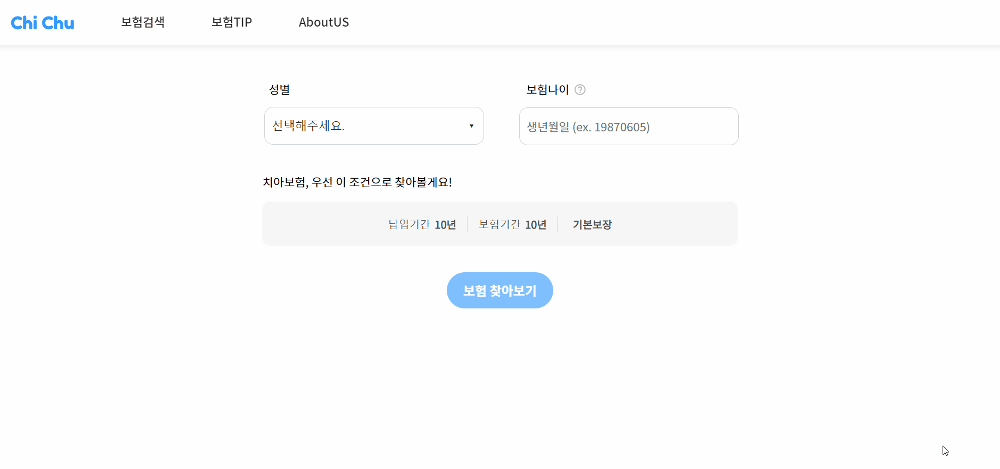
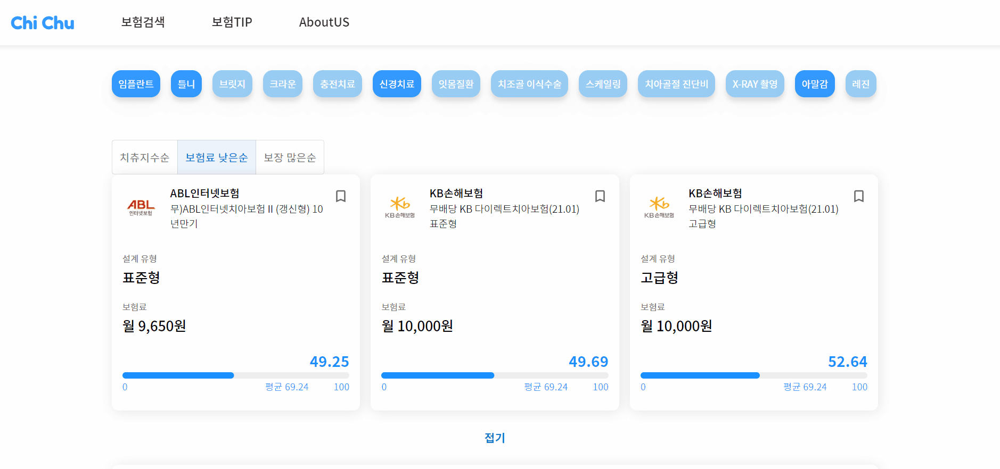
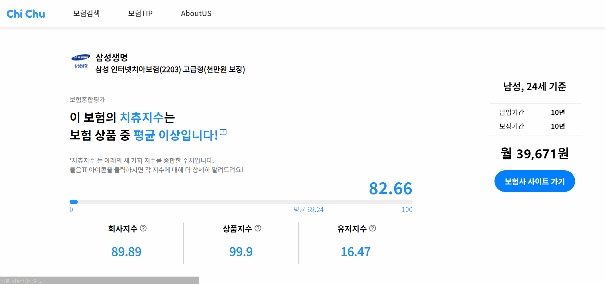
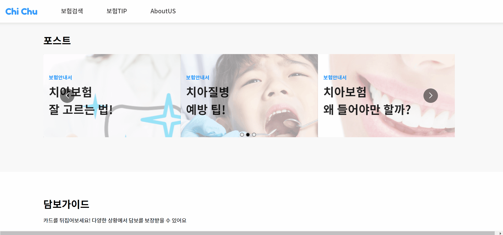

May Rhee
May Rhee
SELECTED WORK / INSURANCE · DATA VISUALISATION
CHI-CHU
A data-driven dental-insurance search, recommendation and comparison experience.
A closer look at the process and the work.
THE BIG PICTURE
A little about the project.
CHI-CHU uses insurance contract information to support dental-insurance discovery. People can refine coverage and premiums, inspect the Chi Chu Index and compare multiple plans.
Read project README01 / CHI-CHU
Find the right coverage
Enter your gender and date of birth to start a dental insurance search. A tooltip explains what insurance age means.

02 / CHI-CHU
Compare insurance plans
Select up to three plans from the search results and compare their premiums, Chi Chu Index scores and coverage details side by side.

03 / CHI-CHU
Present complex data clearly
Plan details break down the Chi Chu Index into company, product and user scores. Charts show the ages of policyholders and the main areas of coverage.

04 / CHI-CHU
Explore dental insurance tips
Browse tips on dental insurance and flip through illustrated cards that explain which coverage applies to different dental situations.
